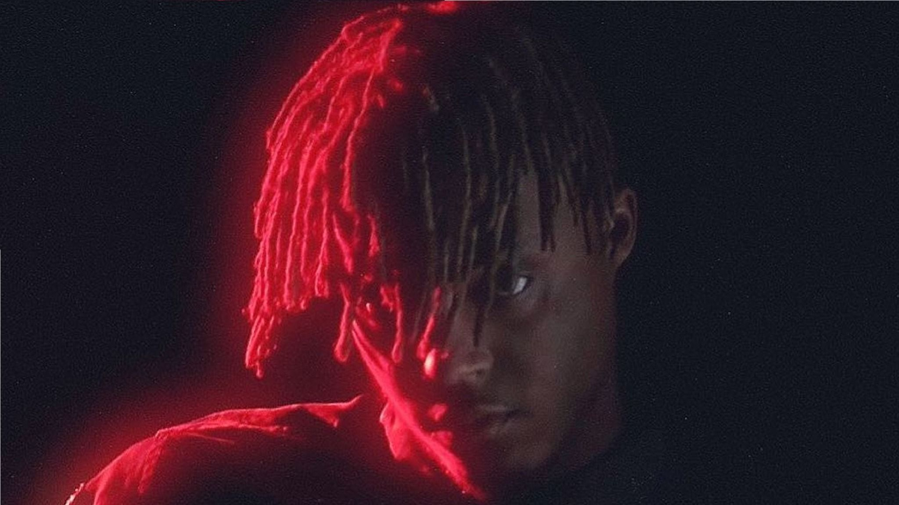

Jarad Anthony Higgins a.k.a Juice Wrld
The man who saved more than million kids!

December 2, 1998 – December 8, 2019.
- 2015–2017: Beginnings, record deal, and early projects
- 2017–2018: Goodbye & Good Riddance and WRLD Domination Tour
- 2018–2019: Wrld on Drugs and Death Race for Love
- 2019–2021: Legends Never Die and Fighting Demons
and will be more! #LLJW.